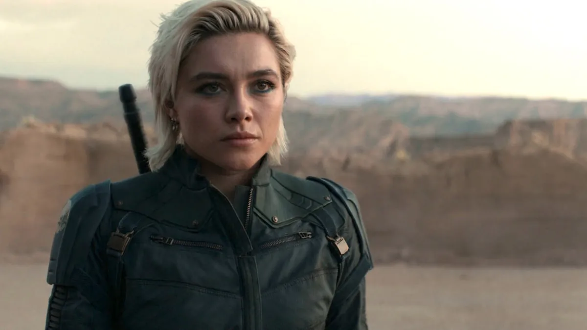
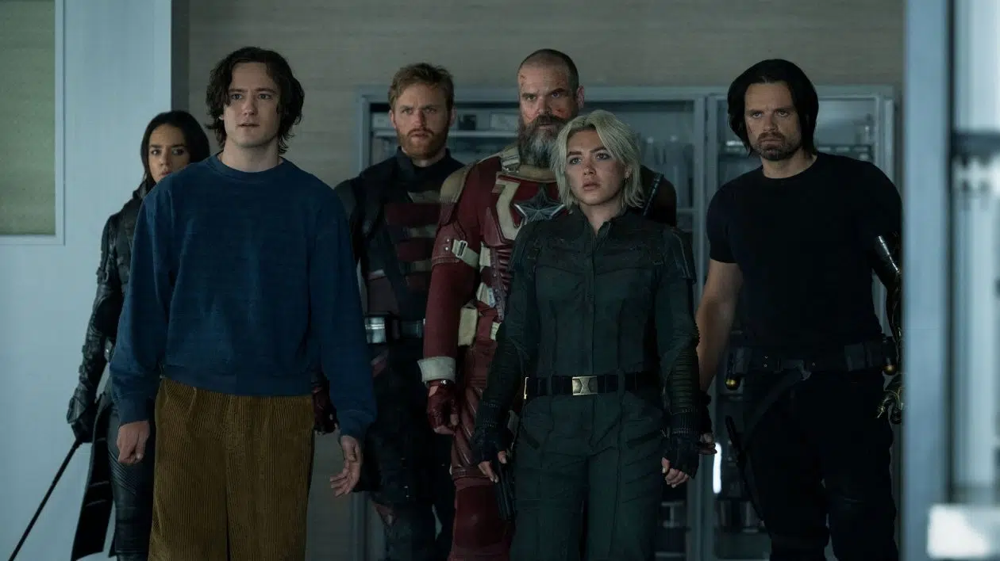
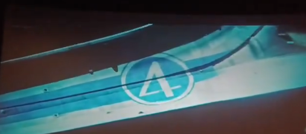

Date de sortie : 31 Avril 2025
Réalisateur : Jake Schreier
Genre : Action, Super-héros, Drame
Acteurs principaux : Florence Pugh, Sebastian Stan, Wyatt Russell, Julia Louis-Dreyfus, Harrison Ford
Note globale : 4/5
Une équipe de personnages fascinants qui apporte une nouvelle dimension au MCU, entre lutte intérieure et quête de rédemption.
⚠️ Attention : Cette critique contient des spoilers sur le film Thunderbolts ⚠️
Un film de groupe qui réinvente les codes du MCU
En attendant l’arrivée des 4 Fantastiques, Marvel Studios frappe fort avec Thunderbolts, un film qui se concentre sur une équipe d'anti-héros plutôt que sur les traditionnels super-héros. Ce groupe improbable, composé d'anciens vilains et de personnages secondaires souvent laissés de côté, est dirigé par Yelena Belova (Florence Pugh), Bucky Barnes (Sebastian Stan), John Walker (Wyatt Russell), Red Guardian (David Harbour), Ghost (Hannah John-Kamen), et Taskmaster (Olga Kurylenko). Ces personnages, aux parcours chaotiques, apportent un vent de fraîcheur inattendu à l'univers Marvel.
Thunderbolts ne s'impose pas immédiatement comme un film indispensable dans le MCU, mais il devient rapidement l’une des plus belles surprises récentes. En réintégrant des personnages sous-exploités et en explorant des thèmes plus profonds, le film parvient à redonner un peu d’humanité et de complexité à un univers en perte de vitesse.
Yelena Belova, le cœur du film
À la surprise générale, Yelena Belova, incarnée par Florence Pugh, se trouve être la véritable protagoniste du film. Son charisme et son magnétisme font d’elle la force motrice du récit. Alors qu'elle pleure encore la mort de sa sœur Natasha, elle devient un personnage beaucoup plus complet et développé que la Black Widow qu’elle remplace, et offre une performance qui va bien au-delà de la simple mission de vengeance. Cette nouvelle incarnation du personnage apporte à Thunderbolts la profondeur émotionnelle qu’on attendait depuis longtemps dans le MCU.
Le film prend également des risques en explorant la santé mentale de ses héros, une démarche qui aurait été impensable dans les premières années du MCU. Les membres de l’équipe sont des "losers magnifiques", chacun d'entre eux devant faire face à des démons intérieurs qui influent sur leurs choix et leurs actions. C’est là que réside la véritable richesse de Thunderbolts : dans cette approche plus sombre et réaliste du super-héroïsme.
La noirceur du film : un vent de changement pour Marvel
Le film prend le temps d’explorer les aspects les plus sombres de ses personnages, notamment à travers le personnage de Bob/Sentry (interprété par Lewis Pullman), qui incarne cette noirceur latente. Bien que l’idée manque parfois de finesse, elle ajoute une dimension inédite au MCU, en intégrant des problématiques de santé mentale et de rédemption dans l’univers des super-héros. Les scénaristes Eric Pearson et Joanna Calo (connus pour leur travail sur Black Widow et The Bear) réussissent à tordre le récit pour offrir un film plus intimiste et émouvant.
Cette approche contraste avec la béatitude habituelle du MCU et marque une rupture avec le modèle des films précédents, où les personnages étaient souvent définis par leurs pouvoirs ou leurs actions spectaculaires plutôt que par leurs conflits intérieurs. C’est cette humanisation qui permet à Thunderbolts de se distinguer des autres films de la franchise.
Un film de groupe qui ne perd pas son âme
Bien que l’équipe semble sur le papier être composée d’éléments disparates, chacun des personnages trouve sa place dans ce film. Bucky, malgré un rôle moins central que prévu, montre une facette de lui-même plus vulnérable, coincé entre son passé de soldat et son désir de rédemption. John Walker et Red Guardian ont également leurs moments de gloire, bien qu'ils soient souvent laissés de côté au profit de Yelena et de Sentry.
Le film reste ancré dans la réalité du monde post-Avengers, avec des héros qui ne sont plus des sauveurs universels, mais des individus brisés tentant de combler le vide laissé par la disparition des Avengers. Le climax, bien que spectaculaire, reste centré sur les enjeux humains et sociaux, un choix que l’on ne retrouve que rarement dans les productions Marvel récentes.
Les Thunderbolts : Un groupe de losers unis par leur passé
Le film est une véritable exploration des personnages cabossés par la vie, et qui, malgré leurs failles, parviennent à se réunir et à devenir une famille. Ce point central du film rappelle évidemment les Gardiens de la Galaxie, les X-Men, et même les Avengers à leurs débuts. Une approche qui ne tombe jamais dans l'excès de l'émotion, évitant ainsi la surabondance de larmes et de scènes trop "cutes".
Ce qui est particulièrement intéressant dans Thunderbolts, c’est l’aspect psychologique des personnages. On retrouve ici le thème du trauma qui les marque tous : de Ghost à Yelena, chacun porte une souffrance intérieure qui impacte ses actions. Mais c’est bien cette vulnérabilité qui fait de ces anti-héros des personnages fascinants, loin des archétypes habituels du MCU.
Les méchants du film ne sont pas de simples antagonistes caricaturaux. La véritable menace vient de la CIA, dirigée par Julia Louis-Dreyfus, qui incarne une boss retorse et manipulateur. Mais au-delà de cette intrigue, c’est bien l’introspection des personnages et leur lutte contre leurs démons qui forment le cœur du film.
Enfin, bien que l'on retrouve certains codes classiques des films de super-héros, comme une bataille finale dans une ville dévastée, la richesse émotionnelle et la profondeur des personnages rendent cette conclusion tout à fait acceptable. Une conclusion qui laisse également entrevoir un avenir pour ces personnages, en espérant qu’ils ne soient pas laissés de côté par la suite du MCU.
En somme, Thunderbolts est un tournant pour Marvel, un film qui se distingue par sa profondeur, sa noirceur et sa capacité à remettre en question la recette classique du blockbuster. Une véritable réussite.
Scène post-crédit : Le futur du MCU se dessine
Première scène post-crédit : La première scène est légère et décalée, mettant en scène David Harbour dans le rôle de Red Guardian. Il est désormais bien plus heureux et soigné, et se trouve dans un supermarché où il harcèle gentiment un passant pour lui acheter une boîte de Wheaties. Cette boîte arbore la photo des Thunderbolts/Nouveaux Avengers, et Red Guardian espère que le passant réalisera qui il est. Bien que cette scène soit dénuée de conséquence, elle reste amusante et fidèle au personnage, qui rêve de spectacle et de reconnaissance.
Deuxième scène post-crédit : La seconde scène est bien plus intrigante et prépare le terrain pour l'avenir du MCU. Nous retrouvons les Thunderbolts qui se chamaillent sur leur nouveau nom. En parallèle, il est révélé que Sam Wilson (Anthony Mackie, bien que non visible) est furieux qu'ils essaient de prendre le surnom des Avengers, et il les poursuit même en justice ! Red Guardian propose une solution décalée en suggérant de remplacer le "S" des Avengers par un "Z", tout en entrant dans la pièce vêtu d'un costume inspiré de celui des pilotes de NASCAR, couvert de sponsors. Cependant, leur discussion est interrompue par l'arrivée d'un vaisseau spatial interdimensionnel arborant le logo des 4 Fantastiques.
Conclusion : Un tournant pour le MCU
Thunderbolts marque indéniablement un tournant dans l’univers Marvel. Avec une approche plus mature et introspective, ce film parvient à redéfinir les codes des productions du MCU, en mettant en lumière des personnages plus humains et vulnérables. Il offre une nouvelle dynamique qui pourrait bien influencer l'avenir du genre. Si tu es fan de Marvel et que tu cherches un film plus riche, plus complexe, ce Thunderbolts est une véritable bouffée d'air frais. À la fois sombre, audacieux et divertissant, il s'inscrit parfaitement dans l'évolution du MCU.
➡️ À lire aussi : Sinners, un thriller surnaturel qui captive et surprend !